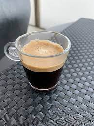
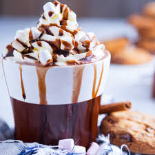

KrizBriz
Coffee
Home
Menu
Contact
KrizBriz Coffee
Start your day with our delicious Coffee!!
Menu
KrizBriz Coffee Menu
Hot Coffees
Hot coffee is a beverage made from brewed coffee beans and served hot or warm. It is one of the most popular beverages in the world and is enjoyed in various forms and preparations, such as drip coffee, espresso, cappuccino, and latte.
Cold Coffees
Cold coffee, also known as iced coffee, is a type of coffee that is served cold. It is made by brewing hot coffee, letting it cool down, and then pouring it over ice. The ice cools the coffee down even further, creating a refreshing and invigorating drink.
Bubble tea
Bubble tea, also known as boba tea or pearl milk tea, is a Taiwanese tea-based drink that typically contains tea, milk, sugar, and chewy tapioca pearls (also called boba) or fruit jelly.

expresso Coffees
Espresso is made by grinding fresh coffee beans into a fine powder and then tightly packing it into a small metal filter called a portafilter. The portafilter is then locked into an espresso machine, which forces hot water through the coffee at high pressure. .
Cafe Mocha
Café mocha, also known as a mochaccino, is a type of coffee drink that combines espresso, chocolate, and steamed milk. It is a popular drink that is often served in coffee shops and cafes.

Hot Chocolate
Hot chocolate, also known as hot cocoa, is a warm beverage made from chocolate or cocoa powder, sugar, and milk or water. It is a popular drink during cold weather or as a comfort drink.
Contact Us
Username
Email
Send